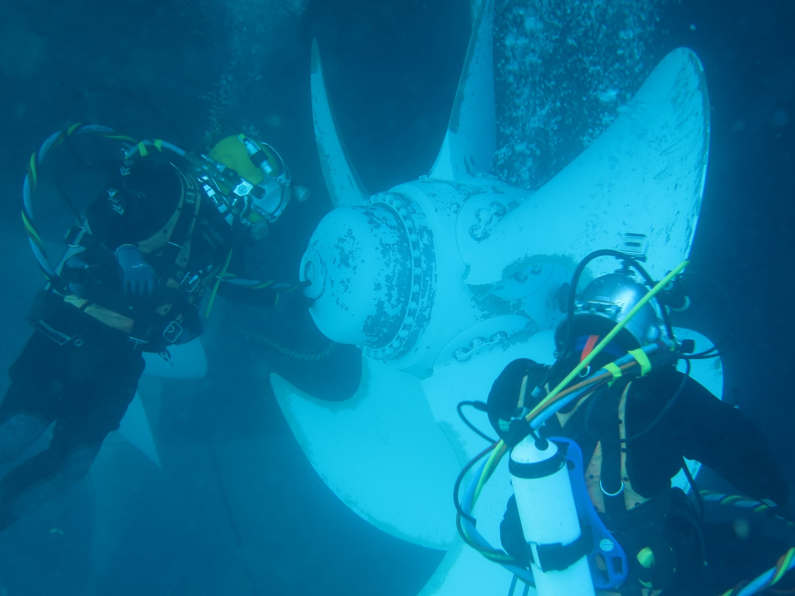
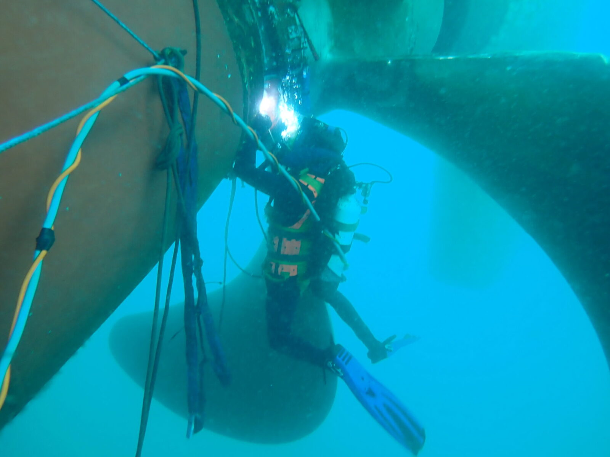
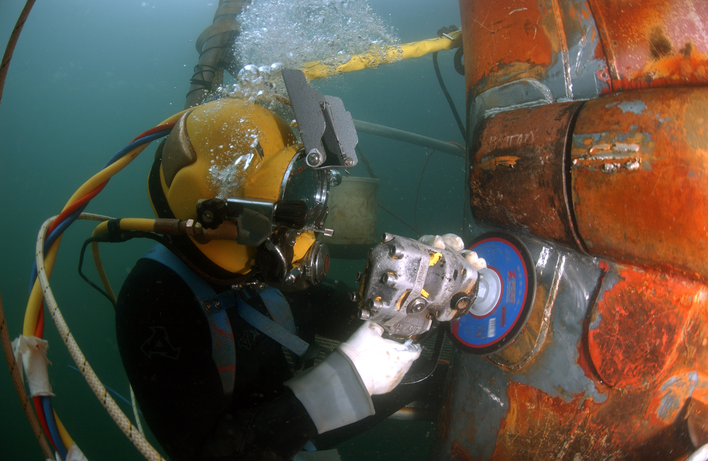

Computer Science in Deep Sea Repair
What is Deep Sea Repair?
Deep sea repair is the highly technical and dangerous job where people at the bottom of the sea perform repairs on essential equipment like pipelines and internet cables.



How Does Computer Science Help?
Biometric Monitoring & Health Analysis
By analysing data from many different sensors on the workers, algorithms can accurately detect early signs of hypothermia or nitrogen narcosis. When ascending algorithms analyse data in real time to adjust ascent schedules to prevent divers from getting the bends.
Smart Life Support Systems
Algorithms read partial pressures of oxygen and can determine when to inject precise amounts of oxygen or diluent gas to keep the air mix correct across a variety of depths and through consistent use.
Underwater Navigation and Enhanced Vision
Software uses sound wave telemetry from surface ships to determine a divers exact position in 3D space. Augmented reality can overlay schematics or essential information onto the divers vision to ensure they are aware of critical information at all times. Computer vision algorithms can digitally clean up low visibility diver feed in real time enabling the diver to see smaller details that may be important to them.
Diver to Surface Communication
Digital Speach Unscrambling instantly processes high pitched and distorted audio from heliox breathing divers for surface supervisors. Communication protocols are optimised to compress and transmit critical telemetry data over slow accoustic channels.